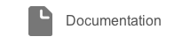
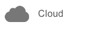
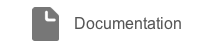
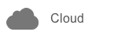

|
InApps C++
|
|
InApps C++
|
Atomic Plugins provide an elegant and minimalist API and are designed with portability in mind from the beginning. Framework dependencies are avoided by design so the plugins can run on any platform and can be integrated with any app framework or game engine.
You can contribute and help to create more awesome plugins.
This repository contains an in-app purchase API designed using the Atomic Plugins paradigm. You can integrate IAPs in your app and take advantage of all the features provided: elegant API, local and server-side receipt validation, secure consumable and non-consumable purchase tracking, local products cache, etc. The API is already available in many languagues and we plan to add more in the future.
We hope you find everything you need to get going here, but if you stumble on any problems with the docs or the plugins, just drop us a line at our forum and we will do our best to help you out.
 


